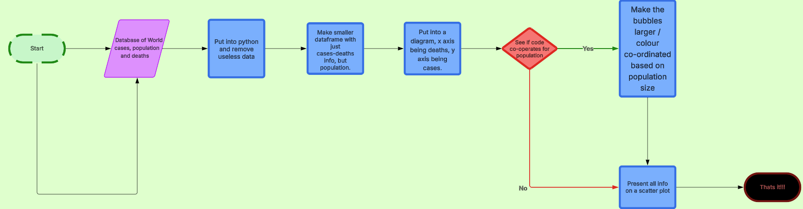

Planning & Design
What We Designed Beforehand
For our design process, we decided to use a Flowchart, and more specifically, Lucidchart.
We decided on this as it was easy to collaborate on and would
give us clear steps on what to do next.
We then went ahead and created our flowchart, which we found helped
us when we wanted to create our code. If you want to see it, click
Here!
